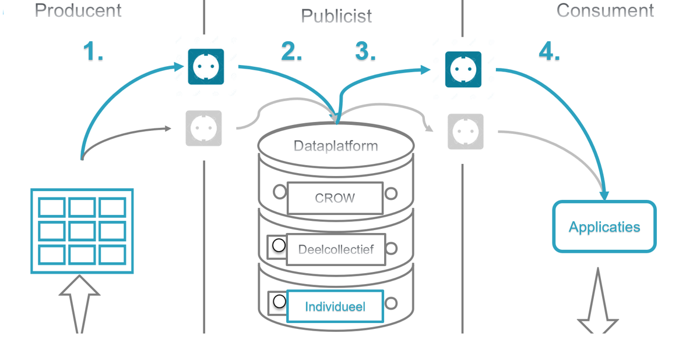
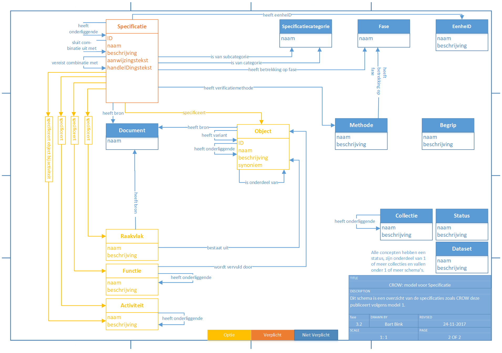

Deze ReSpec beschrijft de aanleverspecificaties van het CROW Dataplatform en de datamodellen van CROW die gehanteerd worden. Er wordt ingegaan op het publicatieproces, de wijze van aanlevering, de eisen aan de datasets, de definities van Classes en Relaties en de juiste semantiek.
# Inleiding
Deze ReSpec bevat de aanleverspecificaties en de gehanteerde datamodellen voor het Dataplatform van CROW.
Het maakt deel uit van de complete set aan documentatie die CROW beschikbaar heeft omtrent het CROW Linked Data Platform (verder: (LDP).
Aanleverspecificaties zijn voorwaarden waaraan een data(set) van een producent moet voldoen waaronder CROW de data(set) kan accepteren voor opname in het dataplatform.
Datamodel beschrijft hoe de gegevens in het LDP gestructureerd zijn.
Binnen het publicatieproces wordt er onderscheid gemaakt tussen drie rollen:
1. Producent
2. Publicist
3. Consument
Elke rol heeft zijn eigen taken/verantwoordelijkheden. In de volgende sectie worden deze nader toegelicht.
## Het Publicatieproces
Op hoofdlijnen onderscheiden we 4 stappen in het publicatieproces:

1. De producent levert een dataset aan bij de publicist.
2. De publicist publiceert de dataset in het het LDP.
3. De publicist zorgt ervoor dat de dataset beschikbaar is in het CROW Kennisbank en/of voor de relevante webservice(s)/endpoint(s).
4. De consument kan een eindgebruiker zijn of een software systeem die data uit het dataplatform haalt voor eigen gebruik. Dit kan bijvoorbeeld door het ophalen van data met zijn/haar software door middel van een webservice.
In de sectie [Eisen aan de dataset](#4) worden de eisen die CROW stelt aan de kwaliteit van aan te leveren datasets bij CROW (=Stap 1) uiteengezet. Informatie over andere stappen of onderdelen van het publicatieproces is opgenomen in andere delen van de documentatie. Hiervoor kunt u contact opnemen met CROW. Na publicatie van een dataset wordt door CROW de URI van de dataset gedeeld met de Producent.
# Definities
Deze sectie beschrijft de definities zoals deze gehanteerd worden binnen de aanleverspecificaties.
## Algemeen
Term
Definitie
Class diagram
Diagram dat de informatiestructuur weergeeft door middel van klassen, attributen en relaties.
Semantiek
De onderliggende samenhang van elementen en de betekenis van ieder element in die samenhang.
SKOS
SKOS (Simple Knowledge Organization System) is een W3C initiatief dat zich bezig houdt met het ontwikkelen van specificaties en standaarden om het gebruik van kennisorganisatiesystemen (KOS) te ondersteunen, zoals thesauri, classificatie schema’s, vakgroep systemen en taxonomieën binnen het framework van het semantisch web. SKOS biedt een standaard manier om kennisorganisatiesystemen te representeren waarbij gebruik wordt gemaakt van het Resource Description Framework (RDF).
CSPEC
CROW Specificatieschema, volgens dit schema worden de specificaties gestructureerd
CDOC
CROW Documentschema. Dit model beschrijft de publicatiestructuur voor de CROW Basisspecificaties en de resultaatsbeschrijvingen
Structuur
De opbouw van informatie in het bestand.
XML
Extensible Markup Language, een standaard van W3C om gestructureerde gegevens in platte tekst weer te kunnen geven
## Definities binnen dit document
Term
Definitie
Aanleverspecificaties
Voorwaarden waaraan een data(set) van een producent moet voldoen waaronder CROW de data(set) kan accepteren voor opname in het dataplatform. zijn voorwaarden waaraan een data(set) van een producent moet voldoen waaronder CROW de data(set) kan accepteren voor opname in het dataplatform.
LDP
Linked Data Platform. Online omgeving (database en tooling) van CROW waarin datasets van zowel CROW, collectieven als individuele organisaties opgeslagen kunnen worden. De datasets in deze database kunnen beschikbaar worden gesteld aan externe gebruikers zodat zij tijd- en plaats onafhankelijk beschikking hebben over de laatste versie van die dataset.
Datamodel
Met een datamodel, of gegevensmodel, wordt beschreven hoe de gegevens in het LDP gestructureerd zijn.
Producent
Eigenaar van een dataset: de organisatie die de dataset heeft ontwikkeld en aanlevert c.q. heeft aangeleverd bij de publicist.
Verantwoordelijk voor de juistheid van de data: kwaliteit, volledigheid, betrouwbaarheid.
Publicist
De organisatie die de dataset opslaat in het LDP en vanuit beschikbaar stelt aan consumenten.
Verantwoordelijk voor (1) het publicatieproces en (2) voor de beschikbaarheid van de dataset.
Consument
Eindgebruiker van de data: persoon (c.q. de software die hij/zij gebruikt) die gebruik maakt van een gepubliceerde dataset. Bijvoorbeeld door deze te bekijken of toe te passen bij het opstellen van een contractdocument.
Verantwoordelijk voor het verkrijgen en bezitten van juiste verificatiegegevens en/of CROW producten voor het ophalen/bevragen van de data.
# Wijze van aanlevering
CROW biedt op dit moment één methode om datasets aan te leveren. Dit is een aanlevering van een dataset per e-mail.
In de toekomst zal dit via een webformulier worden geregeld via de website van CROW.
Elke dataset dient als los bestand bij de begeleidende e-mail gevoegd te worden en bestaat uit het volgende bestandsformaat:
* .ttl (Terse RDF Triple Language) Syntax om de dataset in RDF framework te beschrijven.
In dezelfde e-mail moeten de volgende zaken worden benoemd:
* Contactgegevens van de volgende personen:
* Eigenaar dataset: algemeen aanspreekpunt voor CROW
* Technisch aanspreekpunt: voor vragen over de semantische structuur, modellering etc.
* Aanspreekpunt voor klantvragen: voor het doorsturen van vragen van eindgebruikers van die dataset.
* Indien het een nieuwe versie betreft van een eerder gepubliceerde dataset:
* Verwijzing naar de vorige versie van de dataset. Let op: ten behoeve van versiebeheer is het noodzakelijk om te vermelden wat de verschillen zijn tussen de versies.
# Eisen aan de dataset
In deze sectie worden de minimale eisen beschreven waaraan een dataset moet voldoen.
## Eisen aan de inhoud
De Producent van de data is verantwoordelijk voor de juistheid van de data (kwaliteit, volledigheid, betrouwbaarheid).
CROW stelt op dit moment enkel eisen aan de semantiek en structuur. Deze worden beschreven in de volgende secties.
## Eisen aan het model
Eis 1: Door CROW gepubliceerde model, CSPEC, dient als basis te worden gebruikt voor het definiëren van classes en relaties. Indien in de dataset classes en/of relaties voorkomen die afwijken, dan wordt de dataset niet meegenomen ter publicatie.
Het door CROW gepubliceerde model, CDOC, is optioneel om te gebruiken.
Voorbeeld:
In CSPEC en CDOC staan restricties m.b.t. de domain en range van de relaties die nauwkeurig gevold moet worden.
Domain is wat er links staat van de relatie. En rechts staat de range van de relatie. De restrictie is de regel die geldt voor deze. De domain en ranges met daarbij behorende restrictie zijn terug te vinden in het CROW datamodel
De relaties en klassen in CSPEC en CDOC zijn beschreven in het volgende document:
“Toelichting bij classes en relaties in CROW-datamodellen CSPEC en CDOC v1.0, dd 08-05-2018” (de actuele versie van dit document is op te vragen bij CROW).
In onderstaande figuur is het class diagram van CSPEC weergegeven. Dit class diagram beschrijft welke entiteiten bekend zijn in de CROW-datamodellen en beschikbaar voor instantiering. De betekenis van de data is beschreven d.m.v de relaties tussen de entiteiten.
In het class diagram ligt tevens vast welke entiteiten en relaties verplicht. zijn, welke optioneel. zijn en welke niet verplicht zijn. De optionele klassen of relaties houden in dat er in ieder geval 1 of meer entiteiten moeten aangeleverd zijn.
Eis 2: De volgende modelleer constructies dienen minimaal in de dataset aanwezig te zijn:
* Alle specificaties c.q. eisen dienen geclassificeerd te zijn als `cspec:Specificatie`
* Elke instantie van `cspec:Specificatie` dient d.m.v. de relatie `cspec:specificeert` gekoppeld te zijn aan minimaal één van de volgende concepten:
* `cspec:Object`
* `cspec:Activiteit`
* `cspec:Functie`
* `cspec:Raakvlak`

## Eisen aan de vorm
De dataset moet als separaat Turtle-bestand (.ttl) worden aangeleverd bij CROW (zie de sectie [Wijze van aanlevering](#3))
Het Turtle-bestand dient in lijn te zijn met de W3C Recommendation RDF 1.1 Turtle, gepubliceerd op www.w3.org/TR/turtle.
# CROW-datamodellen
In de volgende secties worden de classes en relaties toegelicht uit 2 datamodellen van CROW:
1. Het CROW Specificatieschema CSPEC: volgens dat schema worden de specificaties gestructureerd. Dit schema wordt door CROW gebruikt voor het publiceren van de Standaard RAW Bepalingen als de RAW Catalogus Bepalingen.
2. Het CROW Documentschema: CDOC: dit model beschrijft de publicatiestructuur voor de CROW Basisspecificaties en de resultaatsbeschrijvingen. De specificaties van de Standaard RAW Bepalingen en de RAW Catalogus Bepalingen volgen de structuur van hoofdstuk, deelhoofdstuk, paragraaf en artikel. De CROW specificaties van de RAW Catalogus Resultaatsbeschrijvingen opgebouwd volgens werkcategorie, subwerkcategorie en romptekst.
In relatie tot de eisen die we stellen aan data van derden kan CROW uiteraard ook besluiten bepaalde data-inhoud niet mee te nemen in de publicatie. Bijvoorbeeld omdat de markt er nog niet rijp voor is of omdat de keuzes stand heden nog te arbitrair zijn en niet robuust genoeg voor software(ontwikkeling).
Als in deze ReSpec gesproken wordt over eisen en niet over specificaties, is dat om taalgebruik niet teveel geweld aan te doen. Het zou daardoor minder toegankelijk worden. Ter illustratie: we hebben het in Nederland meestal over verschillende soorten eisen. Dus niet ‘functiespecificatie’ bijvoorbeeld, maar ‘functie-eis’, etc..
## Classes
Deze sectie geeft een overzicht van alle classes binnen de CROW-datamodellen
Deze concepten en definities in deze secties zijn onderwerp van discussie
### CSPEC Classes
In sectie is een overzicht gegeven van de concepten (classes) die zijn gebruikt in het CROW datamodel. Concepten zijn allerlei ‘dingen’ die zijn gebruikt in de data modellen. De definities van die ‘dingen’ zijn eveneens opgenomen in de betreffende sectie. De concepten van CSPEC zijn hier in alfabetische volgorde weergegeven.
#### `Activiteit`
Activiteit is iets dat gebeurt
Toelichting: Activiteiten zijn vereenzelvigd met werkwoorden. Bij het structuren en aanbrengen van betekenisvolle relaties spelen naast zelfstandige naamwoorden (objecten), werkwoorden (activiteiten) een belangrijke rol.
#### `Begrip`
Begrip geeft een bepaald ding aan
Toelichting: Definities binnen de context van een onderwerp voor objecten, activiteiten, hulpmiddelen of overig. Definities voor objecten en activiteiten zijn relevant voor de semantische relaties tussen eisen, objecten en activiteiten. Voorkeurstermen en synoniemen worden gebruikt. Als er een objectdefinitie is met een URI (Uniform Resource Identifier) die overeenkomt met een object in RAW wordt die URI gebruikt als voorkeursterm; een eventuele objectnamen met een gelijke betekenis als synoniem. Een voorbeeld daarvan is een rioleringsobject dat door Rioned al is gedefinieerd en gekoppeld aan een URI met een gelijke betekenis als in RAW.
#### `Collectie`
Collectie is een verzameling van dingen die bij elkaar horen.
#### `Dataset`
Dataset is een collectie van bibliotheekdata die zijn gepubliceerd om contracten mee op te stellen.
Toelichting: CROW heeft het over bibliotheekdata en niet over projectspecifieke data(sets). De datasets kunnen een verschillende bron hebben: CROW, Provincie etc.. Bij data(set) die specifiek voor een project is gegenereerd, spreken we over een contract(data)set.
#### `Eenheid`
Eenheid is de dimensie van de grootheid waarin een aspect wordt uitgedrukt.
Toelichting: Het concept ‘Eenheid’ komt voor in de RAW Catalogus Resultaatsbeschrijvingen. Die catalogus kan worden beschouwd als een productcatalogus met allerlei (deel)objecten c.q. bouwstoffen. Een deel van de objecten heeft een dimensie: een ‘Eenheid’.
#### `Fase`
Fase is een periode als onderdeel van een langere ontwikkeling.
Toelichting: In de levenscyclus van een object worden een aantal fasen onderscheiden: initiatief, ontwerp, realisatie, gebruik en sloop.
#### `Functie`
Functie is een potentieel meetbare prestatie van een object/systeem.
Toelichting: Een andere verwoording: functie is de beoogde werking en verrichting van een product of dienst. In de datamodellering is volstaan met functies op systeemniveau (of hoofdstukniveau). Zo is wel de functie beschreven van een rioolstelsel maar niet van allerlei in te kopen onderdelen van een rioolstelsel. Functie-eisen zijn eisen aan te realiseren functies; zij geven aan ‘wat het systeem moet kunnen doen’.
#### `Methode`
Methode is een vaste weldoordachte manier van handelen om een bepaald doel te bereiken.
Toelichting: Het concept ‘Methode’ verificatie- of validatiemethoden aan een specificatie te kunnen koppelen.
#### `Object`
Object is een door de mens geproduceerd of gerealiseerd voorwerp, constructie, bouwwerk.
Toelichting: Een object is een ‘ding’. Een afzonderlijk identificeerbaar onderdeel van een fysiek geheel. Het is geen object als het een van onderstaande ook kan zijn:
* Een verzameling
* Een samenstelling van twee objecten (deze is arbitrair)
* Een proces of activiteit
* Een Norm
* Een woord eindigt op -ing. bebakening, voorziening, bewapening, inrichting. Dit zijn gevaarlijke woorden en ‘verboden’ als naam van een object. Het zijn groepen dingen.
* Een object dat een bepaalde status meekrijgt, zoals bestaande ankerstang.
#### `Raakvlak`
Raakvlak is het punt, aspect of gebied dat twee objecten gemeen hebben.
Toelichting: Stand heden is er voor gekozen om ‘raakvlakken’ aan te maken voor RAW-bibliotheekdata. Zo kan worden volstaan met het koppelen van de eis aan dit raakvlak (in het voorbeeld van een raakvlakeis tussen twee objecten, kan zo worden volstaan met 1 koppeling i.p.v. een koppeling van de raakvlakeis aan twee objecten). Voorbeeld: Riolering en Verharding: eisen die worden gesteld aan het hoogteverschil tussen de bovenkant van putten en kolken t.o.v. de (geprojecteerde) verharding.
#### `Specificatie`
Specificatie is een nadere aanduiding waaraan een product moet voldoen.
Toelichting: Woordgebruik eis en specificatie wordt nogal eens door elkaar gebruikt in spreek- en schrijftaal. Ook in dit document dat dient als ‘toelichting op….’. Formeel is een specificatie hetzelfde als een eis, mits opgenomen in een contract. Als onderdeel van een (specificatie)bibliotheek dus niet.
#### `Specificatiecategorie`
Specificatiecategorie is een categorie waar een specificatie toe kan behoren.
Toelichting: Een specificatie is van een bepaalde type. De specificatiecategorieën die worden onderscheiden zijn: functie-eis, aspecteis, objecteis, raakvlakeis en proceseis. Het gebruik van specificatiecategorie wordt nader toegelicht in [deze sectie](#specificatiecategorie).
#### `Status`
Status is de stand of toestand van iets.
Toelichting: Status geeft de kwaliteitsaanduiding aan van een (deel)specificatie of document. Bijvoorbeeld status ‘concept, ‘vastgesteld’ of ‘vervallen’.
### CDOC Classes
De concepten van CDOC zijn hier in een logische volgorde weergegeven.
#### `Context`
Context is het verband waarin iets zich voordoet.
Toelichting: Context heeft een brede betekenis. In het CROW-model wordt ‘Juridische context’ gebruikt om het juridische kader (UAV/UAV-GC) aan te geven, behorend bij een bepaalde specificatie. De geschiktheid/passendheid van een specificatie is afhankelijk van de samenwerkingsvorm (contractvorm).
#### `Publicatie`
Publicatie is een selectie uit de CROW data die voor een specifiek doel aan gebruikers aangeboden wordt, online of als hardcopy. Binnen een publicatie kunnen de aangeboden gegevens een structuur krijgen, bijvoorbeeld een hoofdstukindeling.
Toelichting: Voor de CROW Basisspecificaties 2018 geldt, dat de publicatie een selectie is van de data uit De Standaard RAW Bepalingen en de RAW Catalogus Bepalingen.
#### `Document`
Document is (1) een verzameling gegevens die elk als één geheel wordt vastgelegd en/of gepresenteerd aan de gebruiker. Is (2) een verzameling gegevens van derden, waarnaar verwezen wordt als zijnde de bron van een publicatie
Toelichting: Het concept ‘Document’ wordt tweeledig gebruikt:
1. Om in Publicaties meer dan één structuur te kunnen opnemen, zoals bijvoorbeeld een document met hoofdstukken en paragrafen; en een document dat bestaat uit gegevens. Zoals in de publicatie RAW 2015 drie documenten zitten: de Standaard RAW Bepalingen 2015, de RAW Catalogus Bepalingen 2015 (beide met hoofdstukindelingen) en de RAW Resultaatsbeschrijvingen (de gegevens waarmee het bestek kan worden gemaakt in daartoe bestemde software)
2. Om de bron te vermelden van bijv. een specificatie of een object.
#### `Hoofdstuk`
Hoofdstuk is een deel van een boek of publicatie dat een afgerond geheel vormt.
Toelichting: De CROW Basisspecificaties 2018 op basis van de Standaard RAW Bepalingen en de RAW Catalogus Bepalingen zijn opgedeeld in Hoofdstukken, Deelhoofdstukken, Paragrafen en Artikelen.
#### `Deelhoofdstuk`
Deelhoofdstuk is een opdeling van een hoofdstuk naar onderdelen.
Toelichting: De CROW Basisspecificaties 2018 op basis van de Standaard RAW Bepalingen en de RAW Catalogus Bepalingen zijn opgedeeld in Hoofdstukken, Deelhoofdstukken, Paragrafen en Artikelen.
#### `Paragraaf`
Paragraaf is een deel van een tekst dat kleiner is dan een (deel)hoofdstuk en groter dan een artikel.
Toelichting: De CROW Basisspecificaties 2018 op basis van de Standaard RAW Bepalingen en de RAW Catalogus Bepalingen zijn opgedeeld in Hoofdstukken, Deelhoofdstukken, Paragrafen en Artikelen.
#### `Artikel`
Artikel is een opdeling van een paragraaf naar onderdelen, met tekst waarin een specificatie is opgenomen.
Toelichting: De CROW Basisspecificaties 2018 op basis van de Standaard RAW Bepalingen en de RAW Catalogus Bepalingen zijn opgedeeld in Hoofdstukken, Deelhoofdstukken, Paragrafen, Artikelen (en leden).
## Relaties
Bij het koppelen van specificaties aan concepten wordt gebruikt gemaakt van relaties. In het CROW-model is gedefinieerd welke relaties mogelijk zijn.
Het gebruik van betekenisvolle relaties is uiteraard afhankelijk van de behoefte aan semantiek in de database. Semantiek en complexiteit zal ongetwijfeld worden toegevoegd in de toekomst.
1. Functie-eisen worden gekoppeld aan een functie;
2. Objecteisen en aspecteisen worden gekoppeld aan een object;
3. Raakvlakeisen worden gekoppeld aan een raakvlak;
4. Proceseisen worden gekoppeld aan een activiteit;
5. En eisen die een verificatiemethode hanteren, worden gekoppeld aan die verificatiemethode.
Naast de koppelingen van eisen, zijn er nog koppelingen voor de objectenboom en raakvlakken. Objecten bestaan bijvoorbeeld uit deelobjecten of hebben verschillende varianten. Zo is zichtbaar in een objectenboom of er sprake is van soorten of van samenstellingen.
Hieronder staan de mogelijke relaties die gelegd kunnen worden tussen eisen, objecten, functies, activiteiten, raakvlakken en verificatiemethoden. Met een enkel voorbeeld beperkt tot de relaties die misschien wat toelichting vergen.
### CSPEC Relaties
#### `specificeert`
Iedere eis (specificatie) is gekoppeld aan één of meerdere relevante hoofdconcepten middels de relatie `specificeert`:
* Activiteit
* Functie
* Object
* Raakvlak (raar, is bron van specificatie, niet subject)
Indien er een verificatiemethode is voor een specificatie, is die specificatie gekoppeld aan die verificatiemethode middels de relatie `heeft verificatiemethode`:
* Verificatiemethode (dit zorgt er voor dat een specificatie niet aan meerdere objecten gekoppeld kan zijn als niet altijd deze verificatiemethode geldt),
Er kan uiteraard sprake zijn van meer dan één toegestane verificatiemethode.
##### `specificeert` bij Activiteit
Indien een specificatie betrekking heeft op een bepaalde activiteit dan is deze gekoppeld. Hiervoor wordt de relatie `specificeert` gebruikt. De activiteiten zijn werkwoorden; niet de combinatie van werkwoord – zelfstandig naamwoord.
Ook bij gebruikte werkwoorden in RAW is soms ook onduidelijk of een werkwoord nu eenzelfde of een andere betekenis heeft. Als die onduidelijkheid bestaat in ‘te ontrafelen’ inhoud, blijft die onduidelijkheid uiteraard bestaan. Zo kunnen er twee verschillende werkwoorden voorkomen die misschien wel hetzelfde betekenen voor dezelfde onderwerpen of voor verschillende onderwerpen, maar dat is niet altijd helder. Dan blijven die twee werkwoorden (stand heden) naast elkaar bestaan. De semantische discussies die mogelijk zijn over objecten speelt dus ook bij werkwoorden. Iets dat minder belangrijk is voor een contract op een wat hoger aggregatieniveau dan RAW. In RAW gaat het ondanks het streven, nog vaak over het ‘hoe’ en niet het ‘wat’. Betekent meer belang van werkwoorden in het contract.
Een werkwoord als baggeren of maaien heeft nog weinig betekenis. Baggeren van een vaargeul, of maaien van een talud zegt veel meer. Door deze activiteit te koppelen aan de vaargeul, worden er zinnige eisen gesteld. Het maaien van een talud kent andere eisen dan het maaien van een grasveld. Misschien zijn de eisen (specificaties) nog wel gelijk (grashoogte bijvoorbeeld) maar de omstandigheden waaronder de werkzaamheden moeten worden uitgevoerd zijn totaal verschillend bepalen in een groot aantal gevallen de kosten.
In model 1 is in 2016 gebruik gemaakt van de relaties `specificeert activiteit bij object` en `specificeert object bij activiteit`. Denk hierbij aan allerlei eisen die worden gesteld aan objecten afhankelijk van activiteiten als aanbrengen, verwijderen, inspecteren, renoveren etc. Of aan allerlei eisen die worden gesteld aan activiteiten die afhankelijk zijn van object. Naast de koppeling van de eis aan het betreffende object of de betreffende activiteit, geeft deze relatie extra informatie.
Deze wijze van modellering blijft in het groeimodel straks waarschijnlijk niet gehandhaafd. Waarschijnlijk gaat CROW over op het structureren van combinaties van activiteiten en objecten.
##### `specificeert` bij Raakvlak
Raakvlakeisen zijn eisen die zijn gesteld aan de interactie van het beschouwde systeem met de omgeving, of eisen die worden gesteld aan de interactie tussen objecten binnen het beschouwde systeem (respectievelijk een externe raakvlakeis of een interne raakvlakeis).
Stand heden is er voor gekozen om ‘raakvlakken’ aan te maken voor RAW-bibliotheekdata. Zo kan worden volstaan met het koppelen van de eis aan dit raakvlak (in het voorbeeld van een raakvlakeis tussen twee objecten, kan zo worden volstaan met 1 koppeling i.p.v. een koppeling van de raakvlakeis aan twee objecten).
Naar verwachting is het aantal raakvlakken in RAW beperkt: met accent op raakvlakken tussen objecten. Het betreft generieke (uitvoerings)kennis en geen projectspecifieke kennis (met een projectspecifieke omgeving etc.).
#### `sluit combinatie uit met`
Indien een specificatie niet gebruikt mag worden in combinatie met een andere specificatie dienen deze specificaties gekoppeld te worden middels de relatie `Sluit combinatie uit met` gebruikt te worden. Deze relatie is bi-directioneel.
#### `vereist combinatie met`
Indien een specificatie een combinatie met een andere specificatie vergt dan dient de relatie `vereist combinatie met` gelegd te worden.
#### `heeft betrekking op`
De volgende fasen worden in de levenscyclus van een object onderscheiden:
* Initiatief
* Ontwerp
* Realisatie
* Gebruik (Gebruiksfase is tevens fase Beheer; onderhoud is onderdeel van Beheer)
* Sloop
Beheer en onderhoud maakt deel uit van de fase Gebruik en is geen andere fase in de levenscyclus.
Overigens wordt op veel vakgebieden onderhoud als een onderdeel c.q. als een aspect van Beheer gezien. Beheer heeft dus een bredere, overkoepelende betekenis en staat dus op een hoger aggregatieniveau. Geadviseerd wordt dit als standaard te adopteren.
De data die CROW beschikbaar stelt betreft generieke data c.q. bibliotheekdata. Het is geen projectspecifieke data. Daardoor is niet altijd expliciet aan te geven in welke fase eisen gelden of kunnen gelden. Bepaalde eisen kunnen immers behoren tot de projectfase realisatie, maar ook tot fase beheer. Deels dus arbitrair. Zaak het in ieder geval consistent te doen. Bibliotheekpecificaties die voor meerdere projectfasen gebruikt kunnen worden moeten dus ‘gelabeld’ worden aan meerdere projectfasen. Denk daarbij met name aan specificaties die betrekking hebben op verificatie: verificaties die niet alleen gebruikt worden bij het realiseren van objecten, maar ook bij het beheer (monitoren) van objecten. Meestal is dat wel duidelijk voor auteurs en reviewers.
Eerder is al in deze ReSpec beschreven welk datamodel is gehanteerd en welke inhoud is opgenomen in dat datamodel. Dat wil niet zeggen dat CROW ook alle inhoud beschikbaar stelt c.q. publiceert. Dat is afhankelijk van besluitvorming intern CROW. En – zo is ook aangegeven - in deze ReSpec is niét beschreven welke eisen CROW stelt aan de modelinhoud van derden. Dat geldt dus ook de class ‘Fase’
#### `vervult`
Ieder onderwerp/hoofdstuk/hoofdobject RAW kent minstens 1 functie. Het object is de functievervuller (en wordt gekoppeld door ‘functie – wordt vervuld door – object’). Er is niet altijd is sprake van een object; denk aan een onderwerp als ‘Baggerwerken’ of ‘Grondwerken’.
Van deelobjecten die je kant en klaar bij de leverancier bestelt worden door CROW geen functies beschreven. Denk bijvoorbeeld aan allerlei deelobjecten waaruit een rioolstelsel wordt opgebouwd.
#### `bestaat uit` & `is variant van`
Objecten filteren uit de inhoud en structureren in een zorgvuldig opgezette objectenboom die deels uit een samenstelling bestaat (deelobjecten van bovenliggend object) en deels uit varianten (een variant van een (deel)object). Middels de relaties `bestaat uit` of `is variant van`.
Hierbij is het belangrijk dat de definities van de deelobjecten helder zijn. Of … op basis van de definities die zijn opgenomen in de inhoud en/of …. op basis van de context. Soms worden verschillende termen gebruikt voor hetzelfde ding; soms wordt eenzelfde term gebruikt voor verschillende dingen helaas. Terminologie in de inhoud van RAW is in de Standaard RAW Bepalingen en de bijbehorende catalogi Bepalingen en Resultaatsbeschrijvingen niet overal consistent, maar is de betekenis in haar context wel helder. Bij het opslaan van data in systemen die worden begrepen door software is consistentie in terminologie uiteraard wel cruciaal.
#### `heeft verificatiemethode`
Bij het project ‘Ontvlechten’ zijn de specifieke verificatiemethoden die binnen de RAW worden gehanteerd gekoppeld aan de betreffende eis. Er is binnen het lopende project géén onderscheid gemaakt in type verificatie.
#### `heeft validatiemethode`
In de modellering is nog geen gebruik gemaakt van het concept ‘Validatie’. De RAW-contractdata zijn immers eisen op een merendeels laag aggregatieniveau. Validatie is aantonen dat het systeem geschikt is voor de toepassing. Verifiëren is aantonen dat het systeem juist is ontworpen en gebouwd.
### CDOC Relaties
#### `heeft juridische context`
Een specificatie wordt toepasbaar verklaard voor de volgende contractvormen:
* UAV en/of
* UAV-GC
Hiervoor moet de relatie `is vast binnen context` of `is facultatief binnen context` worden gebruikt.
In de ontwikkelomgeving is tevens gebruik gemaakt van de relatie `is niet van toepassing binnen context`. Dit is gedaan om het werk van de auteur en reviewers explicieter te maken, waardoor het afbreukrisico in onjuiste relaties afneemt.
#### `is vast binnen context` & `is facultatief binnen context`
Bij specificaties moet aangegeven worden of de betreffende specificatie “Vast” of “Facultatief” is. Het is immers bibliotheekdata. Zo zijn alle specificaties uit de Standaard RAW Bepalingen voor UAV vaste specificaties. Alle specificaties in de RAW Catalogus Bepalingen en de RAW Catalogus Resultaatsbeschrijvingen zijn facultatieve specificaties. Wat de markt van de specificaties in RAW als vast of facultatief beschouwt voor UAV-GC moet zich nog uitkristalliseren. In de startdataset is door CROW een voorzet gegeven. Een deel daarvan is geen discussie en vormt nu ook het hart van de contractdata in de Standaard RAW Bepalingen. Denk aan specificaties op een wat hoger niveau zoals stroefheid of vlakheid van een verharding. Een flink deel is echter arbitrair en opdrachtgeverafhankelijk. Nogal wat UAV-GC contracten worden niet functioneel gespecificeerd of zelfs niet (geheel) objectgericht gespecificeerd. Waar stand heden de scheidslijn ongeveer ligt moet voortschrijdend worden bepaald met de markt. Voortschrijdend, omdat een vraagspecificatie in de toekomst naar verwachting op een steeds hoger niveau komt te liggen.
Aangegeven dient te worden of een specificatie toepasbaar is binnen de juridische context van UAV en/of UAV-GC. In de toekomst kunnen meerdere contexten onderscheiden worden. Voor nu volstaat deze kwalificatie. De volgende opties zijn mogelijk:
* (juridische) context UAV: vast / facultatief / niet van toepassing
* (juridische) context UAV-GC: vast / facultatief / niet van toepassing
De contractdataset UAV-GC wordt gevoed door een deel van de contractdata UAV. Op termijn zal die dataset groeien met contractdata voor UAV-GC. Contractdata op een hoger aggregatieniveau passend bij de samenwerkingsvorm UAV-GC. Stand heden ontbreekt die contractdata in de CROW-bibliotheekdata.
## Specificatiecategorie
Met behulp van de relatie `is van categorie` is voor elke specificatie aangegeven onder welke specificatiecategorie deze valt.
In lijn met de methodiek ‘functioneel specificeren’ en ‘Systems Engineering’ wordt hierbij onderscheid gemaakt in de volgende specificatiecategorieën:
* Functie-eis
* Aspecteis
* Objecteis (of gekozen eigenschap: een objecteis zijnde geen aspecteis)
* Raakvlakeis
* Proceseis
De contractdata betreft bibliotheekdata met content RAW. Dat is veel standaard uitvoeringskennis met selectiemogelijkheden in productcatalogi (resultaatsbeschrijvingen) met activiteiten en objecten Specifieke object gerelateerde kwaliteiten, zoals de maatvoering en materialisering noemen we objecteigenschappen.
Zie publicatie 289 [Handboek specificeren](https://www.crow.nl/publicaties/handboek-specificeren) en [CROW-Model Vraagspecificatie van maart 2016](https://www.crow.nl/blog/mei-2016/nieuw-model-vraagspecificatie-best-for-project-g).
### Aspecteis subcategorieën
In deze paragraaf wordt ingegaan op verschillende typen aspecteisen die kunnen worden onderscheiden en wat CROW daar nu mee heeft gedaan.
Een aspecteis kan aan meer dan één aspect zwak of sterk bijdragen. Gebleken is dat auteurs en reviewers CROW heeft als afspraak gehanteerd: maximaal één aspecteistype te selecteren, tenzij onvoldoende consensus. Dus in geval consensus over het maatgevende aspect is dat aangegeven. Bij teveel onduidelijkheid of verschil is geen subcategorie aangegeven.
De meerwaarde van één subcategorie aspecteis (bij voldoende consensus) wordt stand heden hoger ingeschat dan een lijstje met veel arbitraire subcategorieën. Realiserend dat dit betekent dat de vindbaarheid zich beperkt tot aspecteisen waar een subcategorie is aangegeven én zich beperkt tot die subcategorie. Allerlei eisen met mogelijke aanvullende (meerdere) subcategorieën met meer of minder zwakke relaties worden dus niet gevonden.
Te hanteren lijst subcategorieën voor Aspecteis:
* Betrouwbaarheid
* Beschikbaarheid
* Onderhoudbaarheid
* Veiligheid
* Gezondheid
* Milieu
* Beveiliging
* Beeldkwaliteit
Uitgangspunten:
De content van RAW kent groot scala aan eisen op laag aggregatieniveau in de eisenpiramide. Tevens een breed scala aan technische eisen en (keuzes in) eigenschappen van deelobjecten.
Waar sprake is van een aspecteis geldt ‘zo concreet mogelijk, zo abstract als nodig’. Dit betekent volstaan met label ‘aspecteis’ als geen nadere concretisering mogelijk is c.q. er teveel verschil in inzicht en keuze blijkt te zijn in subtype door betrokken auteurs en reviewers.
Indien naar oordeel van de auteur een eis duidelijk een bepaald aspect dient, dan wordt dat aspect aangevinkt. Er kan dus maar één aspecttype worden aangevinkt. De verwachting is dat zodra er aan meerdere aspecten wordt bijgedragen naar oordeel auteur, de resultaten van verschillende auteurs teveel van elkaar zullen afwijken.
Zie [CROW-Model Vraagspecificatie van maart 2016](https://www.crow.nl/blog/mei-2016/nieuw-model-vraagspecificatie-best-for-project-g)
In afwijking van de Model Vraagspecificatie is ‘Beeldkwaliteit’ gehanteerd i.p.v. ‘Vormgeving’. Beeldkwaliteit omvat zowel vorm als materialisering. Beeldkwaliteit is tevens een veelvoorkomend begrip in contractdata voor beheer. En…. voorkomt onnodige selectieproblemen bij twijfel tussen ‘vorm’ en ‘materialisering’. Tevens zijn niet alle RAMSHEEP-aspecten gebruikt omdat het geen projectspecifieke data is maar bibliotheekdata. Politiek bijvoorbeeld is in bibliotheekdata geen issue.
### Proceseis subcategorieën
In de markt is er nog steeds onduidelijkheid in terminologie en afbakening van ‘Proceseis’. Niet iedereen verstaat hetzelfde onder een proceseis. Dit betekent ook dat dit type eisen op hele verschillende plaatsen in het contract voorkomen. Dat levert extra werk en afbreukrisico op in het proces van opstellen en aanbesteden van contracten.
In het CROW-model hebben we iedere eis getypeerd; dus ook eisen van de categorie ‘proces’.
Toelichting:
Proceseisen wordt door partijen verschillend gedefinieerd. Zie SE-wijzer BAM; zie CROW-P289; zie Provincie, Rijk etc.. Naast “eisen aan activiteiten die nodig zijn om het systeem tot stand te brengen”, zijn er ook partijen die allerlei ‘dataverkeer’ (documentenverkeer) ook als proceseis zien. De scheiding in administratieve eisen en proceseisen blijkt best lastig. Proceseisen zijn eisen gesteld aan de wijze waarop het werk tot stand gebracht moet worden. En niet zoals functie-, aspect- en objecteisen aan het te realiseren systeem.
Wat betreft duidelijkheid in het onderscheid tussen een ‘proceseis’ en overige eistypen is de rapportage van de [CROW-Model Vraagspecificatie van maart 2016](https://www.crow.nl/blog/mei-2016/nieuw-model-vraagspecificatie-best-for-project-g) het meest transparant tot heden. Niét door de vijf functierollen van IPM; en niét door het gebruik van de vier onderscheiden processen: technisch management, projectmanagement, projectbeheersing en omgevingsmanagement. Maar wél door de (soms arbitraire) keuzes die gemaakt zijn in de daarbij horende werkpakketten. Houvast daarbij is de plaats van een werkpakket in die structuur (de structurering volgens de Model Vraagspecificatie van maart 2016). Het overzicht van de vier processen en de bijbehorende werkpakketten is hieronder opgenomen.
| 1. Technisch Management | 2. Projectmanagement | 3. Projectbeheersing | 4. Omgevingsmanagement |
|----------------------------- |----------------------------------------------- |---------------------------- |---------------------------------- |
| TM - Ontwerpen | PM - Interactie opdrachtgever - opdrachtnemer | PB - Scopemanagement | OM - Communicatie |
| TM - Uitvoeren | PM - V&G management | PB - Kwaliteitsmanagement | OM - Verkeersmanagement |
| TM - Onderhouden | PM – Inkoopmanagement | PB - Planningsmanagement | OM - Vergunningen |
| TM - Verifiëren & Valideren | | PB - Financieel management | OM - Kabels en leidingen |
| TM – Opleveren | | PB - Risicomanagement | OM - Archeologie |
| | | PB - Documentmanagement | OM - Flora en fauna |
| | | PB – Informatiemanagement | OM - Niet gesprongen explosieven |
# CSPEC model overview
## CSPEC Classes
# Schema's CROW-datamodellen
CROW beheert specificaties in o.a. de Standaard RAW Bepalingen, de RAW Catalogus Bepalingen (met facultatieve aanvullingen en wijzigingen op ‘de Standaard’), en de RAW Catalogus Resultaatsbeschrijvingen. De specificaties worden opgeslagen en gepubliceerd in het LDP volgens een model of schema. Die schema’s zijn hieronder weergegeven en bestaan uit drie delen.
Voor het specificatieschema van de Resultaatsbeschrijvingen vindt nog een doorontwikkeling plaats. Dat schema wordt niét gebruikt voor publicatie stand heden. Het schema is hier in concept opgenomen voor een beter begrip van het totaalbeeld. Een beeld dat aansluit bij de inhoud van RAW, waarin de Resultaatsbeschrijvingen voor sommigen belangrijker en/of bekender zijn dan de RAW Catalogus Bepalingen (of de inhoud van de Standaard RAW Bepalingen).
1. Het CROW Specificatieschema CSPEC: volgens dat schema worden de eigenlijke specificaties in triples vastgelegd. Voor zowel de Standaard RAW Bepalingen als de RAW Catalogus Bepalingen.
2. Het nog aan te passen concept CROW specificatieschema voor de RAW Catalogus Resultaatsbeschrijvingen: CRES: bevat de uitbreiding van specificaties voor de RAW specifieke concepten. Denk aan deelspecificatie, bouwstof en eenheid.
3.Het Documentschema: CDOC: volgens dat schema wordt de verbinding gelegd met de documenten en publicaties van de specificaties. Zo zijn de CROW specificaties van de RAW Catalogus Resultaatsbeschrijvingen opgebouwd volgens werkcategorie, subwerkcategorie en romptekst. De specificaties van de Standaard RAW Bepalingen en de RAW Catalogus Bepalingen volgens hoofdstuk, deelhoofdstuk, paragraaf en artikel.
## Schema diagram CSPEC
## Schema diagram CDOC
![Specificatieschema voor Standaard RAW Bepalingen + RAW Catalogus Bepalingen [CSPEC]](Schema Specificaties.v3.2.3 CSPEC_VERVALLEN.png) ## Schema diagram CDOC
## Schema diagram CDOC
![Publicatieschema voor Basisspecificaties en Resultaatsbeschrijvingen [CDOC]](Schema Specificaties.v3.2.3 CDOC_VERVALLEN.png)